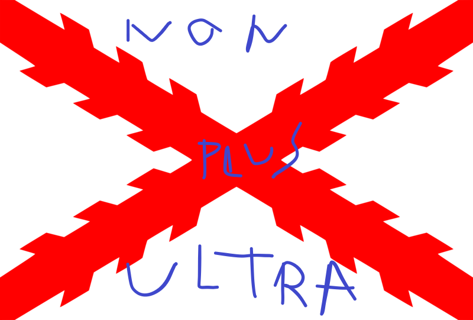

Hyperblog
Para comprender el mundo
Este es el título atractivo e interesante del post
Y este es el párrafo de inicio donde vamos a explicar las cosas increíbles que se pueden hacer con ramas.

Este otro párrafo lo agrego en 'master' para luego hacer un merge con los cambios de diseño que hice en 'cabecera'.
fix-typo